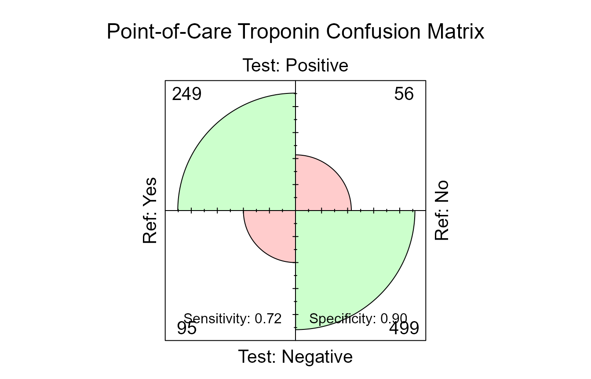

diag_test() & roc(): Diagnostic Accuracy and Biomarker Discrimination
Source:vignettes/diagnostic-and-roc.Rmd
diagnostic-and-roc.RmdDiagnostic evaluations in clinical epidemiology assess how accurately an index test identifies the presence or absence of a target condition compared against a gold-standard reference.
In this guide, we follow the acute diagnostic phase of the
ESTROBE-ACS study. Across six emergency departments,
patients presenting with suspected acute coronary syndrome (ACS) were
enrolled in a point-of-care (POC) biomarker substudy. We evaluate
whether qualitative bedside point-of-care high-sensitivity troponin
(poc_hstn_positive) or quantitative troponin concentrations
(poc_hstn_value) can accurately rule out or identify
adjudicated ACS (adjudicated_acs), adhering to the
STARD 2015 (Standards for Reporting Diagnostic Accuracy
Studies) guidelines.
1. Defining the Diagnostic Cohort
Clinical Context & Research Question: Within the ESTROBE-ACS emergency cohort, how was the point-of-care biomarker substudy sampled, and what are the observed test completion counts?
Before evaluating test performance, clinical investigators must document participant accounting:
# Subset participants enrolled in the bedside biomarker substudy
diagnostic <- subset(epitabl, diagnostic_substudy == "Yes")
c(
total_enrolled = nrow(epitabl),
substudy_enrolled = nrow(diagnostic),
observed_index_tests = sum(!is.na(diagnostic$poc_hstn_positive)),
observed_reference_standards = sum(!is.na(diagnostic$adjudicated_acs))
)
#> total_enrolled substudy_enrolled
#> 1500 920
#> observed_index_tests observed_reference_standards
#> 899 9202. Binary Diagnostic Test Accuracy with
diag_test()
What is the clinical accuracy (Sensitivity, Specificity, PPV, NPV, and Likelihood Ratios) of a qualitative bedside troponin test for detecting adjudicated ACS?
diag_test() evaluates binary index tests against a
reference standard. To ensure clinical transparency, you must explicitly
declare which factor levels represent positive status: -
positive: The target condition level in the reference
standard ("Yes"). - test_positive: The
positive result level in the index test ("Positive").
accuracy <- diag_test(
diagnostic,
test = poc_hstn_positive,
ref = adjudicated_acs,
positive = "Yes",
test_positive = "Positive",
ci = "exact"
)
#> Removed 21 observation(s) with missing values (2.3%).
accuracy
#>
#> ============================================================
#> DIAGNOSTIC TEST EVALUATION
#> ============================================================
#>
#> Sample size : 899
#> Confidence level : 95%
#> CI method : exact
#>
#> Reference standard (gold standard):
#> Positive = 'Yes' | Negative = 'No'
#>
#> Diagnostic test:
#> Positive = 'Positive' | Negative = 'Negative'
#>
#> ------------------------------------------------------------
#> Confusion Matrix
#> ------------------------------------------------------------
#> Ref
#> Test Yes No
#> Positive 249 56
#> Negative 95 499
#>
#> ============================================================
#> Performance Metrics (95% CI)
#> ============================================================
#> Sensitivity : 72.38% (67.33% - 77.04%)
#> Specificity : 89.91% (87.10% - 92.29%)
#> Pos Pred Value (PPV) : 81.64% (76.83% - 85.82%)
#> Neg Pred Value (NPV) : 84.01% (80.81% - 86.86%)
#> Accuracy : 83.20% (80.60% - 85.59%)
#> Prevalence : 38.26% (35.07% - 41.53%)
#> ------------------------------------------------------------
#> Likelihood Ratio + : 7.17 (5.55 - 9.27)
#> Likelihood Ratio - : 0.31 (0.26 - 0.37)
#> Youden Index : 0.62
#> F1 Score : 0.77
#> Diagnostic Odds Ratio : 23.36 (16.24 - 33.59)
#> Cohen's Kappa : 0.64 (0.58 - 0.69)Key Metrics Computed:
- Sensitivity & Specificity: Probability of a positive test given true disease, and negative test given absence of disease.
- PPV & NPV (Predictive Values): Positive and Negative predictive values calculated at the cohort prevalence.
- Positive & Negative Likelihood Ratios (): Prevalence-independent measures of diagnostic revision.
- Diagnostic Odds Ratio (DOR): Ratio of odds of positive test in diseased vs non-diseased ().
-
Confidence Intervals (
ci): Supports exact Clopper-Pearson binomial intervals ("exact") or score-based Wilson intervals ("wilson").
2.1 Confusion Matrix Visualization
SimtablR provides a fourfold display of the confusion matrix via
plot():
plot(accuracy, main = "Point-of-Care Troponin Confusion Matrix")
The four quadrants represent True Positives, False Positives, False Negatives, and True Negatives, visually scaling cell counts and odds ratios.
2.2 Tidy Metric Extraction
All underlying metrics, standard errors, and confidence intervals are
stored without destructive rounding in $data and can be
extracted as a tidy data frame:
# Extract structured evidence table
head(as.data.frame(accuracy, tidy = TRUE), 8)
#> metric estimate conf.low conf.high
#> sensitivity Sensitivity 0.7238372 0.6733423 0.7704311
#> specificity Specificity 0.8990991 0.8709753 0.9228776
#> ppv Pos Pred Value (PPV) 0.8163934 0.7682959 0.8582225
#> npv Neg Pred Value (NPV) 0.8400673 0.8080707 0.8686349
#> accuracy Accuracy 0.8320356 0.8059641 0.8559089
#> prevalence Prevalence 0.3826474 0.3507490 0.4153175
#> lr_pos Likelihood Ratio + 7.1737438 5.5491609 9.2739425
#> lr_neg Likelihood Ratio - 0.3071550 0.2582723 0.36528973. Continuous Biomarker Discrimination with roc()
How well does quantitative bedside troponin concentration discriminate adjudicated ACS across the entire spectrum of decision cutoffs, and what is the optimal threshold by Youden’s J index?
When an index marker is measured on a continuous numerical scale
(such as poc_hstn_value in ng/L), roc()
computes the Receiver Operating Characteristic curve.
3.1 Empirical AUC and DeLong Confidence Intervals
Evaluating the marker without cutpoint hunting provides an unbiased assessment of overall discriminatory capacity:
troponin_roc <- roc(
diagnostic,
marker = poc_hstn_value,
outcome = adjudicated_acs,
positive = "Yes",
cutpoint = "none"
)
#> Removed 21 observation(s) with missing values (2.3%).
troponin_roc
#>
#> ROC Curve Analysis
#> ==================
#> Outcome: adjudicated_acs (positive = 'Yes')
#> CI method: delong | Direction: auto
#>
#> Marker AUC (95% CI) Direction Cutpoint Sensitivity Specificity
#> poc_hstn_value 0.90 (0.89 - 0.92) <
#> PPV NPV
#>
#> ℹ Methodological guidance
#> 2 additional methodological notes hidden. Run simtablr_guidance("teaching")
#> separately before printing to show all advice.The estimated Area Under the Curve (AUC) is reported alongside asymptotic DeLong 95% confidence intervals.
3.2 Threshold Optimization with Youden’s J
In clinical practice, emergency physicians often require a single
decision cutoff to trigger admission or discharge. Passing
cutpoint = "youden" optimizes the trade-off between
Sensitivity and Specificity by maximizing Youden’s
:
troponin_youden <- roc(
diagnostic,
marker = poc_hstn_value,
outcome = adjudicated_acs,
positive = "Yes",
cutpoint = "youden"
)
#> Removed 21 observation(s) with missing values (2.3%).
troponin_youden
#>
#> ROC Curve Analysis
#> ==================
#> Outcome: adjudicated_acs (positive = 'Yes')
#> CI method: delong | Direction: auto
#>
#> Marker AUC (95% CI) Direction Cutpoint Sensitivity Specificity
#> poc_hstn_value 0.90 (0.89 - 0.92) < 13.65 84.30% 81.08%
#> PPV NPV
#> 73.42% 89.29%
#> ! Methodological warning
#> A data-driven ROC cutpoint is reported from the same data used to estimate
#> performance; its sensitivity and specificity are optimistic. Validate the
#> threshold in external data or with resampling before treating it as a
#> decision rule.
#> 2 additional methodological notes hidden. Run simtablr_guidance("teaching")
#> separately before printing to show all advice.SimtablR automatically displays educational advice reminding analysts that data-derived thresholds exhibit optimistic bias and require external cohort validation before clinical deployment.
4. Reporting Guidelines: STARD Checklist & Automated Methods
How do we verify methodological compliance against the STARD 2015 diagnostic checklist and generate publication-ready methods text?
SimtablR facilitates guideline adherence through the
stard() reporting verb:
stard_report <- stard(accuracy)
head(as.data.frame(stard_report), 8)
#> item requirement status pointer
#> 1 1 Identification as diagnostic accuracy study not-assessed
#> 2 2 Structured summary not-assessed
#> 3 3 Scientific and clinical background not-assessed
#> 4 4 Study objectives not-assessed
#> 5 5 Study design not-assessed
#> 6 6 Eligibility criteria not-assessed
#> 7 7 Participant selection not-assessed
#> 8 8 Participant recruitment not-assessedFurthermore, as_methods() translates the exact
analytical choices, confidence interval formulas, and software
implementations into concise prose ready for manuscript submission:
cat(as_methods(accuracy))
#> Diagnostic accuracy was evaluated against adjudicated_acs as the reference standard; sensitivity, specificity, predictive values, accuracy, and prevalence were reported with exact binomial 95% CI, likelihood ratios with asymptotic (log-method) 95% confidence intervals, the diagnostic odds ratio with a log 95% CI, and Cohen's kappa was reported for index-test / reference-standard agreement with a large-sample 95% CI.